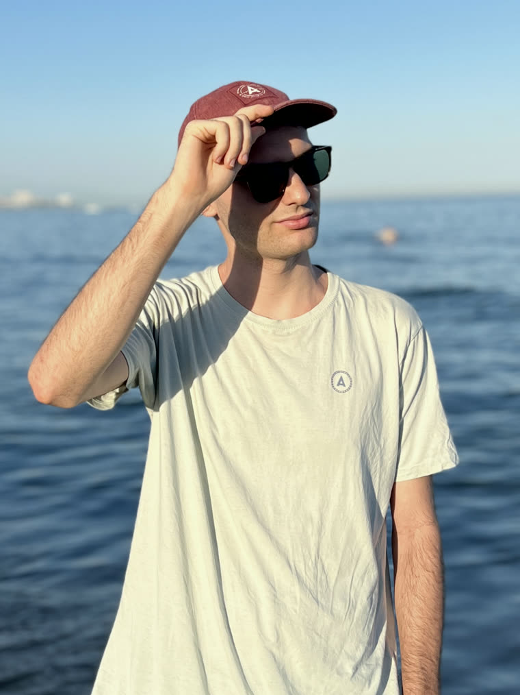
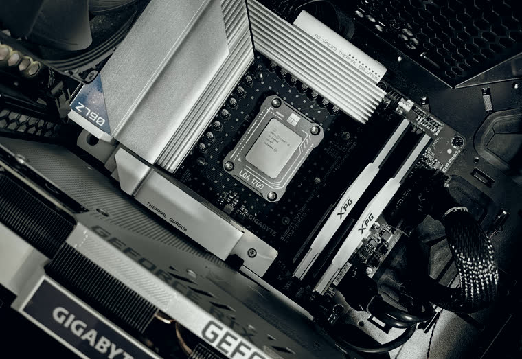
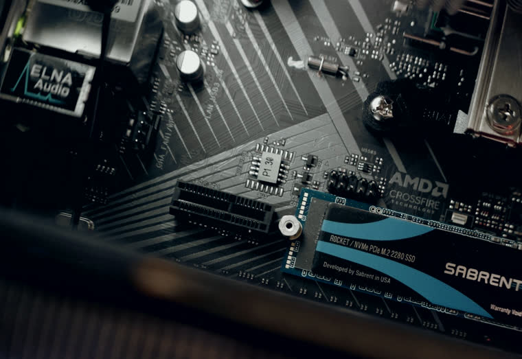
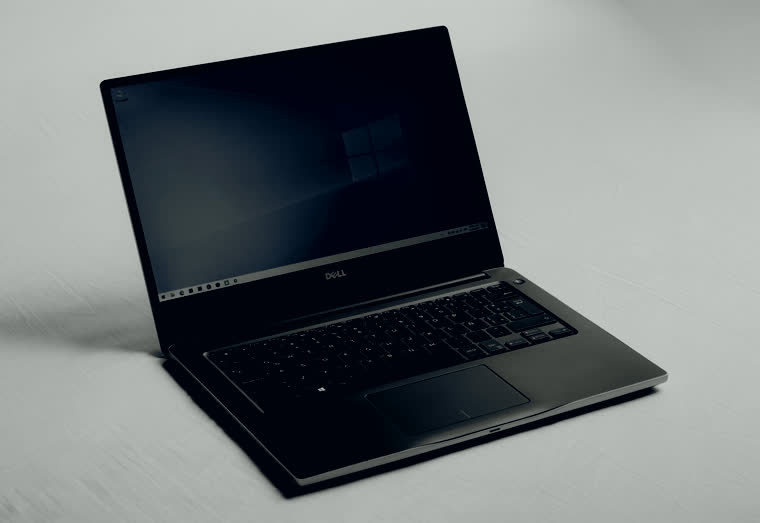
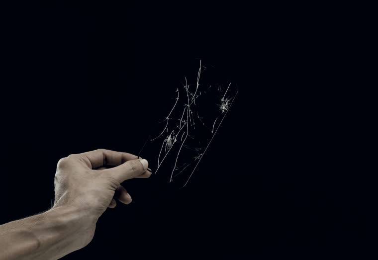
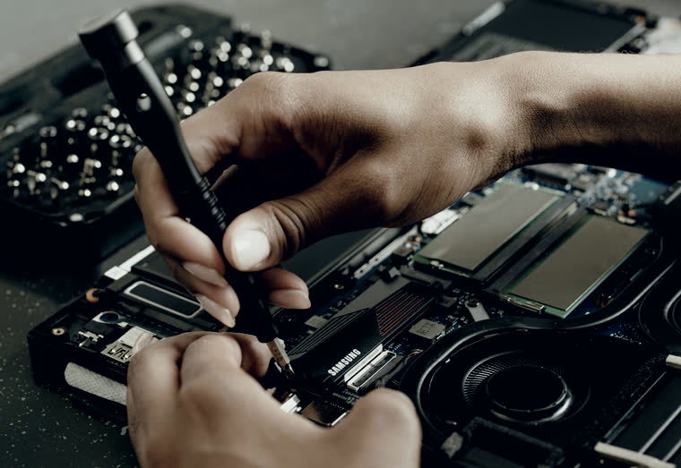

Drift de mandos Stick de efecto Hall, que trabaja por imán y no roza contra nada. Ese mando no se vuelve a ir solo.
01
Me llamo Luis y arreglo cosas que otros dan por perdidas
Soy técnico informático y trabajo desde mi propio banco, con estación de soldadura y herramienta de precisión. No tengo tienda de cara al público, así que quedamos donde te venga bien en Córdoba.
Me escribes por WhatsApp contándome qué le pasa al aparato. Te digo el precio y el plazo antes de que me dejes nada, y si hay que pedir una pieza te aviso de cuánto tarda antes de que decidas. Sin diagnósticos que se pagan aparte ni presupuestos que suben a mitad de camino.
Lo que mejor se me da son los mandos y los Joy-Con. Un stick de efecto Hall bien puesto se olvida del drift para siempre, y eso lo dejo listo casi siempre el mismo día.

02
Servicios

Limpieza y pasta térmica Le quito el polvo del disipador y le pongo pasta nueva. Baja de temperatura y deja de rugir.

SSD y clonado Paso tu Windows tal cual al disco nuevo: programas, archivos y contraseñas siguen donde estaban.

Windows limpio El equipo desde cero, con los drivers puestos y las actualizaciones hechas.

Pantallas y baterías Móvil o tablet con la pantalla rota o sin aguante. Dime el modelo y te busco la pieza.

Diagnóstico Si no sabes qué le pasa, lo miro y te digo qué tiene y cuánto cuesta. Mirarlo no se cobra.
Marcas con las que trabajamos
NintendoPlayStationXboxSamsungAppleXiaomiHuaweiRealme
NintendoPlayStationXboxSamsungAppleXiaomiHuaweiRealme
HPLenovoASUSAcerMSIDellSurfaceIntelAMDNVIDIA
HPLenovoASUSAcerMSIDellSurfaceIntelAMDNVIDIA
03
Tarifas
- 01 Drift de mandosLe pongo un stick de efecto Hall, que trabaja por imán y no roza contra nada. Ese mando ya no vuelve a driftear. Joy-Con y Pro Controller de Nintendo Switch, mandos de PS5 y de Xbox. desde 20 €
- 02 Limpieza y pasta térmicaPara la consola que se apaga sola o el portátil que suena como un secador. Abro, limpio disipador y ventilador, y cambio la pasta. 10 €
- 03 SSD y clonado de tu sistemaCambio el disco duro por un SSD y paso tu Windows tal cual: programas, archivos y contraseñas siguen donde estaban. El disco no va incluido, te digo cuál comprar. 40 €
- 04 Instalación limpia de WindowsEl equipo de cero, con los drivers puestos y las actualizaciones hechas. La licencia no va incluida: si te hace falta, va aparte y te digo lo que cuesta antes. 8 €
- 05 Pantallas, baterías y tecladosSi tienes la pantalla rota, del móvil o de la tablet, dime el modelo exacto y te busco la pieza. Cambiar una pantalla lleva su tiempo, así que te paso precio cerrado y cuánto tarda en llegar. según modelo
Si no lo arreglo, no cobro
Y si hace falta pedir una pieza cara, te digo lo que cuesta antes de encargarla.
Estos precios son de entrega en mano en Córdoba. Si estás fuera también te lo arreglo, pero el porte de ida y vuelta va aparte y lo pagas tú: dime de dónde escribes y te lo calculo antes de cerrar nada.
¿Tu modelo no sale en la lista? Dime cuál es y te paso precio y plazo. Mirarlo no se cobra.
04
Cómo trabajamos


05
Cómo va
-
01
Me cuentas qué le pasa
Por WhatsApp, con el modelo del aparato. Si se ve algo raro por fuera, mándame una foto.
-
02
Te paso precio y plazo
Los dos cerrados. Cuando hay que encargar una pieza te digo cuánto tarda antes de que me dejes el aparato.
-
03
Le hago fotos antes de abrirlo
Te las mando para que veas cómo llegó. Así ninguno de los dos discute después por una marca que ya estaba.
-
04
Lo recoges funcionando
Te lo enseño montado y encendido, lo probamos juntos, y entonces pagas.
06
Lo que suelen preguntarme
- ¿Cuánto tardas?
- Si tengo la pieza, el mismo día o al siguiente. Si hay que pedirla te digo el plazo antes de que me dejes nada: hay repuestos que llegan en dos días y otros que tardan tres semanas.
- ¿Y si al final no tiene arreglo?
- Si no consigo repararlo, te lo devuelvo como estaba y no me pagas la mano de obra. Si para averiguarlo hacía falta comprar una pieza cara, eso lo hablamos antes de encargarla y no después.
- ¿Dónde quedamos?
- En Córdoba capital, donde te venga bien. No tengo tienda: soy yo y mi banco de trabajo, así que quedamos y ya está.
- ¿Cómo se paga?
- Efectivo o Bizum, al recogerlo y después de probarlo delante de ti. Lo único que te pido por adelantado es la tasa de aduana, y solo cuando la pieza viene de fuera de la Unión Europea: te digo el importe exacto antes de encargar nada, y si no te encaja, no se pide.
- ¿Voy a perder la garantía?
- Si el aparato todavía está en garantía, llévalo primero al servicio oficial. Te sale gratis y no tiene sentido que lo pagues. Si veo que es tu caso te lo digo yo, aunque me quede sin el trabajo.
- ¿Hay algo que no cojas?
- Daños por agua, recuperación de datos y trabajo a nivel de placa base. Necesitan equipo y experiencia que ahora mismo no tengo, y prefiero decírtelo de entrada. Si me llega algo así te digo dónde llevarlo, aunque no me lo quede yo.
- ¿Y si no vivo en Córdoba?
- También te lo reparo, pero el porte de ida y vuelta lo pagas tú y te lo calculo antes de cerrar nada. Para un mando suele compensar; para un portátil, casi nunca.
07 · Córdoba capital
Dime qué aparato es y qué le pasa
Contesto el mismo día. Si es algo que puedo resolver en el momento, lo sueles tener de vuelta en 24 horas.
Escríbeme por WhatsApp →Es por donde trabajo, no cojo llamadas. Si prefieres el correo, luishidalgoa@outlook.es.
Entrego en mano en Córdoba. Fuera, el porte lo pagas tú y te lo calculo antes.